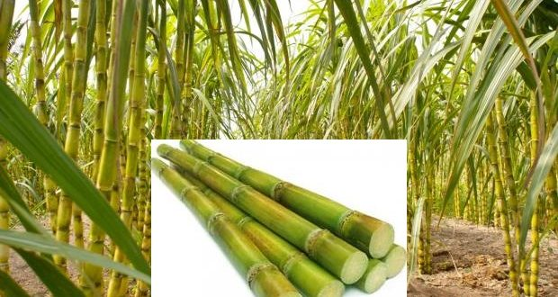

Sugarcane Production
General Info :
Sugarcane, Saccharum officinarum L. is a perennial gras. It belongs to bamboo family and it is indigenous to India. It is the main source of sugar, jaggery and khandsari. About two-thirds of the total sugarcane produced in India is consumed for making jaggery and khandsari and only one third of it goes to sugar factories. It also provides raw material for manufacturing alcohol. Brazil is largest producer of sugarcane followed by India, China, Thailand, Pakistan and Mexico. In India, Maharashtra is largest producer of sugar and it contributes about 34% of sugar in country followed by Uttar Pradesh.
SOIL :
Well drained, deep, loamy soil with ground water table below 1.5-2 m from the soil surface with adequate water holding capacity is ideal for sugarcane cultivation. It can tolerate considerable degree of acidity and alkalinity so it can be grown on soil, ranging from 5 to 8.5. If soil is low in pH (less than 5) add lime in soil and for high pH (more than 9.5) do gypsum application.
POPULAR VARIETIES WITH THEIR YIELD :
Cos 91230: Gives average yield of 280 qtl/acre. Co Pant 90223: Gives average yield of 350 qtl/acre. CoH 92201: Early maturing variety, gives average yield of 300 qtl/acre. Cos 95255: Early maturing variety, gives average yield of 295 qtl/acre. CoS 94270: Gives average yield of 345 qtl/acre. CoH 119: Early maturing variety, gives average yield of 345 qtl/acre. Co 9814: Early maturing variety, gives average yield of 320 qtl/acre.
LAND PREPARATION :
Give two ploughings to land. First ploughing should be given at depth of 20-25 cm. Crush clods with suitable implements or machine.
SEED :
Time of sowing: In Punjab, planting season of sugarcane is from September to October and February to March. Sugarcane takes generally one year to mature therefore called as Eksali.
Spacing: Row spacing is ranges from 60-120 cm for sub-tropical regions.
Sowing Depth:
Sow the sugarcane at depth of 3-4 cm and cover it with soil./p>Method of sowing:
A) For sowing use improved method of planting like deep furrow, trench method, paired row method or ring pit method. 1) Dry planting in ridges and furrow: With the help of tractor drawn ridger, make ridges and furrows at distance of 90 cm. Plant sugarcane setts then cover it with soil. After then give light irrigation. 2) Paired row planting: Make Trenches at 150 cm distance using trenches opener. Plant sugarcane in paired row using 30:30-90-30:30cm spacing. It gives higher yield as compared to ridges and furrow. 3) Ring Pit method: Circular pits of 60 cm diameters are dug at depth of 30 cm with a tractor mounted digger. 60 cm gap is provided between adjacent pits. 2-3 ratoons can be taken. 25-50% higher yield can be obtained compared to ridge and furrow. B) Single budded set planting: Select healthy setts for plantation. Make furrows at distance of 75-90 cm. Place single budded setts. If only small size setts from top portion of cane are selected then they are planted at distance of 6"-9". Place eye of sett on upward direction to ensure proper and quick germination. Cover setts with soil and apply light irrigation.LAND PREPARATION :
Seed Rate Various research and experiment shows that, germination percentage of 3 bud sets is higher than the setts having more or less than three buds. Germination percentage of single bud sett is very low because of moisture loss from other cut end. Also if whole can stalk is planted without giving any cut, still germination percentage remain low as only top end will get germinate. Seed rate vary from region to region. In North West India, seed rate is high because of low germination percentage and adverse weather i.e hot weather with desiccating winds. Use seed rate of 14,000 three budded setts per acre. Seed Treatment Take seed material from crop of 6-7 months age. It should be free from pest and disease. Discard pest, disease affected and damaged buds and canes. Harvest seed crop one day before planting, it will give high and uniform germination. The setts should be soaked in Carbendazim@3gm in 1litre of water. After chemical treatment treat with Azospirillum. For that dip setts in Azospirillum inoculum@800gm/acre +sufficient water solution for 15min before planting. Soil Treatment Suspended 5 kg of bio fertilizer per acre in 10 litres of water & mixed with thoroughly with 80-100 kg of FYM. The mixed bio fertilizer in FYM is sprinkled over cane setts in the rows of planting. Immediately rows should be covered.
FERTILIZER :
Fertilizer Requirement (kg/acre):| UREA | SSP | Muriate of Potash | ZINC |
| 200 | As per soil test | As per soil test | # |
| NITROGEN | PHOSPHORUS | POTASH |
| 90 | As per soil test | As per soil test |
Soil testing after every three year is necessary to know actual need of fertilizer. Before sowing at time of last ploughing, add well decomposed cow dung@8ton or Vermicompost+ Ralligold@8-10kg or PSB@5-10kg per Acre. At time of sowing apply Urea@66kg per acre. At development stage, apply second dose of Urea@66kg at the time of second irrigation. Apply third dose of Urea@66kg at time of fourth irrigation.
In winter due to low temperature uptake of nutrient by crop become less and plant give yellow appearance. To recovered crop take spray of 19:19:19@100gm/15Ltr of water. In water scarcity situation spray of Urea+Potash@2.5kg/100Ltr is helpful for crop.
IRRIGATION :
The number of irrigations required will depending upon soil type, water availability etc. The hot weather associated with dry winds and drought increases the water requirement of the crop. Apply first irrigation when 20-25% crops have germinated. In monsoon, apply irrigation depending upon rainfall intensity and frequency. In case of scanty rainfall apply irrigation with 10days interval. Afterwards increase irrigation intervals, i.e apply water with 20-25days interval. To conserved moisture in soil do mulching in between cane rows. Avoid water stress from April to June. Water stress during these days will reduce yield. Avoid water logging in standing field. Tillering stage and elongation or grand growth phase are critical for irrigation. Earthing: Soil between the furrows of canes, is taken with the help of spade and applied to the sides of the plants. It help to mix top dressed fertilizer well within the soil, also it help to support plant and prevent it from lodging.
WEED CONTROL :
In sugarcane due to weed infestation about 12 to 72% yield loss is observed depending upon severity. Initial 60-120 days are critical for weed management. Therefore weed management practices should be adopt within 3-4 months after planting. For control of weeds, chemical is not only solution. Adopting mechanical as well as cultural practices gives effective solution. 1) Mechanical Measure: As sugarcane is widely space crop, weeding with hand or interculture operation can be easily carried out. Take 3-4 hoeing after every irrigation. 2) Cultural Operations: It included change in cropping pattern, intercropping and trash mulching. Monocropping leads to heavy infestation of weed. Crop rotation with fodder or green manure crops suppress weeds. Also sugarcane is wider space crop so there is opportunity for weed to grow in large numbers. If sugarcane is intercrop with short duration crops then it will suppress the weed growth also give additional benefit. In trash mulching, mulch of 10-12cm/br> thickness is provided in between cane row after emergence of cane. It will restrict the sunlight thus help to check weed growth. It also conserved soil moisture. 3) Chemical: To control weeds, carry out pre-emergence weedicide application with Simazine or Atrazine@600-800 g/acre or Metribuzine@ 800 g/acre or Diuron@1- 1.2 kg/acre. Apply pre-emergence herbicides immediately after planting. Apply 2,4-D@250-300 g/acre as post-emergence herbicide for broad-spectrum weed control in sugarcane.
HARVESTING :
Harvesting of cane at right time is necessary for good yield and for high sugar recovery. Harvesting at over aged or under aged cane leads to loss in cane yield. Depending upon withering of leaves and cane juice, harvesting time can be decided. To know the right harvesting time some farmer used hand sugar refractometer is used. Sickles are used for harvesting. Stalks are cut at ground level so that the bottom sugar rich internodes are harvested which add to yield and sugar. De-topping at appropriate height. After harvesting quick disposal of the harvested cane to factory is necessary.